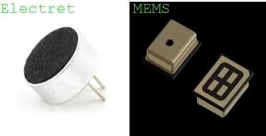
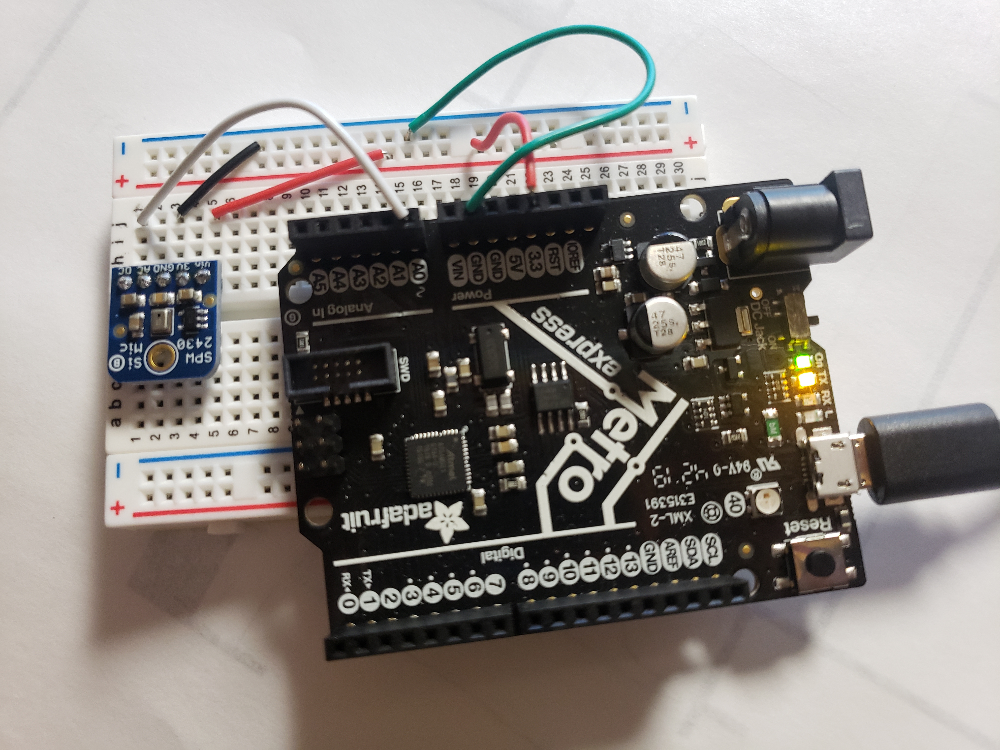

MEMS Microphone Module
Adafruit MEMS Microphone Breakout SPW2430
The most common microphones used with microcontrollers are the MEMS and electret microphones. MEMS microphones are considered an upgrade to their electret predecessor because besides having a much smaller footprint, they also contain internal semiconductors that act as an audio preamplifier. Audio preamplifiers condition small microphone level signals (on the order of one thousandth of a volt to one tenth of a volt, 0.001V – 0.1V) to line level (up to 2 volts peak to peak). Electret microphones need an external preamplifier circuit to boost its output signal. MEMS microphones can be analog or digital, the output of digital MEMS use either pulse density modulation (PDM), or I2S protocols and can connect directly to a microcontroller, eliminating the need for an ADC.
The SPW2430 board uses an analog MEMS microphone and is fairly simple to hook up. You only need to connect GND to GND, Vin to 3.3-5VDC, and the analog audio waveform will come out of the DC pin. In this case, I have the DC pin connected pin A0 on the Metro M0 Express board. The AC pin can be used for applications where AC-coupled audio is required.
If you upload the following code to your board, you can measure the amplitude or “loudness” of the audio signal generated by the SPW2430. Audio signals are oscillating voltage signals, think of sound waves, so the higher the amplitude, the greater the distance between the center voltage and the high and low peaks of the audio signal. This sketch samples the microphone audio in 50 millisecond intervals, measures the highest and lowest peaks within that sample, and then prints the difference between the peaks to Serial. In this case, it might be easier to see what’s going on by using the Serial Plotter (Tools > Serial Plotter or Ctrl+Shift+L) instead of the Serial Monitor.
const int sampleWindow = 50; // Sample window width in mS (50 mS = 20Hz)
unsigned int sample;
void setup()
{
Serial.begin(9600);
}
void loop()
{
unsigned long startMillis= millis(); // Start of sample window
unsigned int peakToPeak = 0; // peak-to-peak level
unsigned int signalMax = 0;
unsigned int signalMin = 1024;
// collect data for 50 mS
while (millis() - startMillis < sampleWindow)
{
sample = analogRead(0); //reading DC pin from pin A0
if (sample < 1024) // toss out spurious readings
{
if (sample > signalMax)
{
signalMax = sample; // save just the max levels
}
else if (sample < signalMin)
{
signalMin = sample; // save just the min levels
}
}
}
peakToPeak = signalMax - signalMin; // max - min = peak-peak amplitude
Serial.println(peakToPeak);
}
Serial Plotter

Note, this is not measuring the frequency of the sounds being picked up by the microphone. Analyzing frequency is a much more subtle and complex process which can be achieved by using Fast Fourier Transform (FFT) libraries.